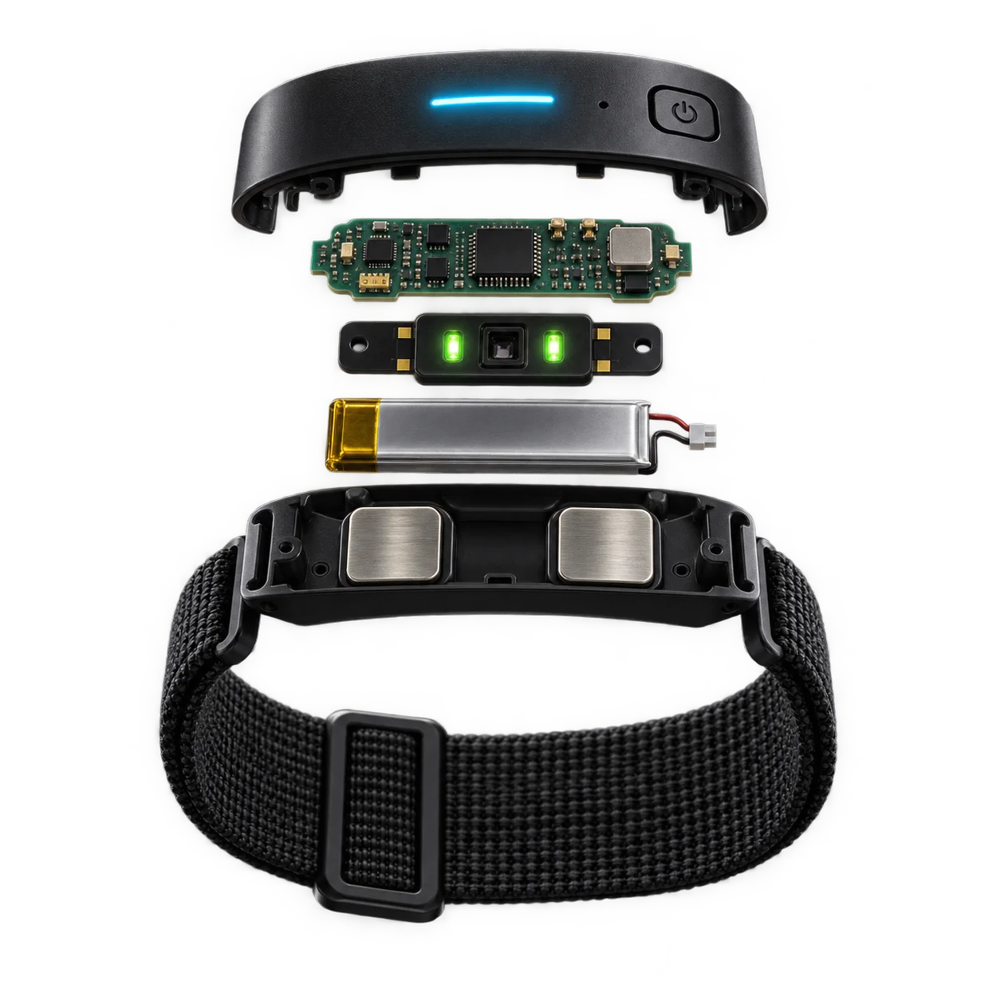

StudyLoop · Field notes
Sheet 01 / 06
SL-01 · The band
Abandthatfeelsstress.
Music that answers it.

01
Status light
Breathes during baseline.
02
Pulse sensor
Reads your pulse.
03
EDA electrodes
Read skin conductance.
04
One button
Press to mark a moment.
Inside the band
01 · Baseline
Twenty still seconds.
The band learns what normal looks like today.
Capturing baseline
Band ready
0:20
Capturing your baseline. Sit still.
Your baseline
Heart rate
68bpm
Skin conductance
2.4µS
When stress climbs, your music slows and softens with you.
Skin conductancevs. your baseline
Stable
Changing
Elevated
Recovering
Skin conductance
Your baseline
Elevated
Now playing
Loop · Lo-fi groove
92
bpm · lyric-free
Follows your band
Elevated · easing off
Slower and softer.
Review · 11:42 pm
03 · Review
See where your signals moved away from baseline.
0%
Near baseline
0
Elevated moments
0
Moments you marked
Sample session · 45 min
Focus, measured differently.